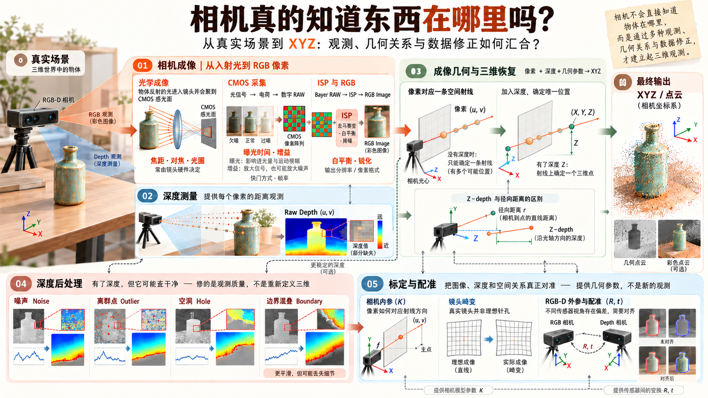

相机真的知道
东西在哪里吗？
拿起 RGB-D 相机，对着桌上的瓶子拍一张。RGB 有了，Depth 也有了，似乎套个公式就能得到一堆 XYZ。
可是，相机为什么能把光变成图像？照片明明是平的，一个像素又凭什么变成三维坐标？深度从哪里来？为什么瓶子在彩色图里清清楚楚，深度却可能缺了一块？
看来，“拍到一张图”与“算出有明确几何含义的 XYZ”，中间还有好几段路。先把问题分开，具体的原理和方法，再沿着每条小路慢慢挖。
先认认路：五件需要弄明白的小事
所有章节都已经展开在下方。这里是一张速查地图，点击任意一条，就能跳到对应笔记。
观测从哪里来？成像 · 几何 · 测距
观测可以相信吗？异常 · 真实设备
这是一张问题关系图，不代表相机内部严格的处理顺序；深度恢复也可能依赖事先完成的标定。

沿着问题，往下走。
以下五章全部展开 · 不需要点击解锁光进了镜头，怎么就成了一张图？
最开始学习相机时，我想弄明白的是怎样从图像得到三维坐标。
但很快发现，自己似乎跳过了一个更基础的问题：我甚至还不知道，一张图像究竟是怎么产生的。
于是先把投影、深度和 XYZ 放到一边，从最开始的成像过程看起。
光是怎样经过镜头的？CMOS 如何把光变成数字信号？为什么传感器采集的数据还需要经过 Bayer 插值和 ISP 处理，才能成为我们熟悉的 RGB 图像？曝光、增益和快门又会怎样影响最终的结果？
这一站先弄清楚：从真实场景中的光，到计算机读到的像素，中间究竟发生了什么。
照片是平的，空间去哪儿了？
上一部分终于弄清楚了图像是怎么产生的。但回到最初的目标，我想得到的是物体在三维空间中的 XYZ，而相机给我的却是一张二维图像。
这时我发现，虽然知道了像素值是怎么来的，但我还是不知道一个像素究竟对应空间中的哪里。
比如图像里的一个瓶口，我能找到它的像素坐标 (u, v)，可它和真实世界中的位置究竟有什么关系？三维空间是怎样被压缩进一张二维照片里的？反过来，能不能从照片中把空间位置找回来？
于是先不考虑深度怎么测，而是从最简单的相机模型开始，尝试建立三维空间与二维图像之间的几何关系。
这一站想弄清楚：一个三维点是怎样变成二维像素的，反过来又能从这个像素找回多少空间信息？
方向知道了，距离谁来告诉我？
上一部分尝试从二维像素找回三维位置，结果发现：即使知道了像素对应的空间方向，也无法确定物体究竟在多远的地方。
原来想得到完整的 XYZ，我还缺少距离信息。
既然 RGB-D 相机能够直接输出深度图，那问题似乎已经解决了。但仔细想想，我只是知道怎么使用深度值，却根本不知道相机是怎么把距离测出来的。
它又不像尺子一样直接接触物体，凭什么能知道瓶子离自己有多远？不同相机的测距原理一样吗？为什么有些相机能测到的东西，换一台就测不到了？
于是先把深度代入坐标公式的事情放到一边，开始探索相机究竟有哪些测距方法，以及它们各自依赖什么条件。
这一站想弄清楚：相机究竟凭什么知道距离，不同测量方法有什么本质区别，以及深度图里的数值到底代表什么。
深度测出来了，为什么还是坑坑洼洼？
上一部分终于弄清楚了相机是怎样测出深度的。我原以为有了深度图，就可以直接恢复三维坐标了。
但仔细观察深度图才发现，测出了距离，不代表每一次测量都准确可靠。
明明是静止的物体，深度值却会跳动；原本连续的表面出现空洞，物体边缘还可能混进背景。如果直接用这些数据生成点云，错误也会跟着进入三维空间。
那这些问题只能靠更好的相机解决吗？既然已经得到了深度图，能不能利用相邻像素、连续帧或其他信息，让测量结果更可靠？
于是开始探索深度后处理。但这里又有一个值得警惕的问题：如果把不平整的深度都修得平滑，会不会连真实的几何细节也一起抹掉？
这一站想弄清楚：深度测量中的异常有哪些方法可以改善，而这些处理又可能付出什么几何代价。
公式好像没错，怎么点云还是歪了？
前面已经了解了图像如何产生、深度怎样测量，以及怎样改善异常观测。现在终于可以把像素和深度代入公式，恢复 XYZ 了。
但回过头看公式，我突然意识到一个问题：公式里的相机内参是从哪里来的？它们真的能准确描述手里的相机吗？
我们一直使用理想的相机模型，可真实镜头会产生畸变，不同相机的参数也不一样。即使公式完全正确，如果使用的参数不准确，算出来的空间位置仍然可能出错。
而 RGB-D 相机还有一个问题：彩色图像和深度图未必来自同一个视角。那我凭什么认为 RGB 图像中的一个像素，可以直接使用深度图中相同位置的数值？
于是开始探索相机标定、畸变校正，以及 RGB 与 Depth 之间的几何配准。
这一站想弄清楚：怎样让理想的数学模型对应真实相机，并让不同传感器的观测正确关联到同一个三维空间。
回头看：相机到底告诉了我什么？
走到这里，五条路就串起来了：相机成像解释光如何变成像素；成像几何给出像素对应的空间射线；深度测量补上距离；后处理尝试改善原始深度，但不能凭空创造可靠的几何；标定与配准则让数学关系对应真实设备。
最后得到的，不是相机“直接看见了物体的位置”，而是一份由成像、测距和几何模型共同建立的三维观测。每一步都提供了新的信息，也有各自无法跨越的限制。
有了这些，再把目标区域交给 Q01 的几何方法，或者为 Q02 的已知参考提供投影依据，就有了清楚的起点。
边界留在这里。本页只认识相机怎样形成三维观测。目标究竟是谁、相机坐标怎样交给机器人，分别留给 Q03 的另外两条路线。